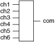

The following figure represents the NI PXI-2797 in the 6×1 terminated multiplexer topology.

|
Caution The terminators on the NI PXI-2797 are rated for 1 W average power at 25 °C, with power on all terminators not to exceed 3 W. Terminators cannot withstand the full rated power of the NI PXI-2797. |
In this topology, you can connect channels by calling the niSwitch Connect Channels VI or the niSwitch_Connect function.
To connect the CHx terminal to the COM terminal, disconnect the previously connected terminal from the COM.
For example, to connect ch1 to com, call niSwitch_Connect (vi, "ch1", "com"). If you now want to connect ch2 to com, first disconnect the existing connection. The sequence of calls for this task is as follows:
niSwitch_Disconnect (vi, "ch1", "com")
niSwitch_Connect (vi, "ch2", "com")
 |
Note Any input channel not connected to COM is connected to its associated 50 Ω terminator. |
|
Note All channels are disconnected from COM when the NI PXI-2797 is in its power on state. |
When scanning the NI PXI-2797, a typical scan list entry could be ch2->com;. This entry routes signal connected to ch2 to com.